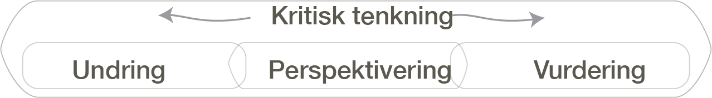

Hva er motoren i å lære?
Vi har diskutert dette i over hundre år. Og svaret har stor betydning for hva vi tenker skjer i klasserommet — med eller uten KI.
Eleven sitter og trykker i matematikk-appen. Grønt. Rødt. Grønt igjen.
Er dette en kognitiv aktivitet — eller en gjettelek? Foregår det læring, eller foregår det en aktivitet som ligner på læring?
Uten et felles pedagogisk språk kan vi ikke engang stille spørsmålet — og da kan vi heller ikke svare på det.
Kritisk tenkning — motoren som er felles for kognitivisme, sosikulturelle og pragmatiske teorier

UndringBruddet som starter prosessen
PerspektiveringTre ut, still spørsmål, overveie
VurderingBedømme, begrunne, ta stilling
KI kan enten støtte denne motoren — eller kortslutte den.
Når KI leverer svaret før eleven har fått undre seg, forsvinner startpunktet for all kritisk tenkning. Det er dette vi skal se nærmere på.